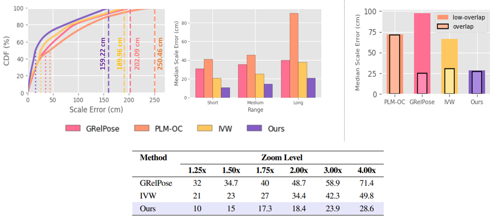

CALIBRA: Calibration-Aware Multi-Agent Verification for Contactless Physiological Monitoring

Abstract
In mission-critical scenarios, autonomous agents often operate in GPS-denied or GPS-degraded environments, making it challenging to localize agents relative to themselves and objects of interest (e.g., potential cover) or adversarial robots. While vision- and radiobased modalities have individually been used to estimate relative ranges between agents and surrounding objects, each modality suffers from inherent limitations. Vision-based range estimation degrades significantly under low image overlap, partial visibility, or when an agent is too close to an object, resulting in effective zoom-in and loss of geometric context. Conversely, radio-based ranging is susceptible to multipath interference, signal fading, and environmental variability, which can substantially reduce range accuracy and reliability. To address these challenges, we introduce CAViAR, a quality-aware multimodal fusion framework for accurate relative range estimation among collaborative autonomous agents. CAViAR assigns modality-specific reliability scores and performs statistical fusion to adaptively weigh vision and radio inputs based on their estimated quality. The framework employs modality-specific quality estimators augmented with temporal features and integrates MBConv blocks to enable efficient feature processing on resource-constrained robotic platforms. We validate CAViAR on ROSbot 2 and ROSbot 2 Pro platforms using an in-house dataset collected across diverse indoor and outdoor environments. Experimental results demonstrate that our approach outperforms single-modality baselines by approximately 21% over vision-only and 36% over radio-only range estimates. Moreover, CAViAR adapts robustly to variations in scene structure, viewpoint overlap, and occlusions without requiring fine-tuning on new environments, highlighting its practicality for real-world deployment.
Quality Estimator

Quality estimator employs a learned module based on a multi-layer perceptron (MLP) and a gated recurrent unit (GRU). The estimator outputs quality weights representing the reliability of each modality for accurate fusion.
Results

Key quantitative results of CAViAR.
BibTeX
@article{Shinde_2026_WoWMoM,
title={CAViAR: Quality-Aware Vision-and-Radio Fusion for Relative Range Estimation among Collaborative Autonomous Agents},
author={Shinde, Gaurav and Ravi, Anuradha and Lewis, Jared and Harrison, Andre and Gardiner, Henry and Anwar, MS and Sakib, Shadman and Freeman, Jade and Roy, Nirmalya},
booktitle={2026 IEEE 27th International Symposium on a World of Wireless, Mobile and Multimedia Networks (WoWMoM)},
year={2026}
}